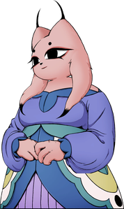

Name
Sol Seal
Location
Story
Past
Lady Ethereal comes from Guifang Kingdom. Toward the end of the Origin Era, Lady Ethereal and her eight companions, including Xiaohe and Uncle Cao, established a research team dedicated to creating the Soulscape system, a hibernation system theoretically designed to overcome the previous pitfalls of placing Solarians in hibernation pods.[4] This theoretical system intended to improve on previous hibernation systems by providing slumbering Solarians with a blissful virtual reality. This, the team believed, would eliminate the issue of previous systems causing brain death after prolonged hibernation. For their work, they were invited by Yi to join the Tiandao Council, which designated the team as a special unit and gave them the means to bring this theoretical system to reality.[5][6] Lady Ethereal's collegues compilation To test the Soulscape system, Lady Ethereal's eight companions elected to participate in a thirty-day observational trial. Each of them was placed in a dedicated Vital Sanctum, where they would hibernate and be placed in prototype Soulscape systems. Before commencing the observational period, Lady Ethereal met with Xiaohe, who was her best friend, lab partner, and romantic partner.[1] Xiaohe voiced her faith in Lady Ethereal's designs, bidding her lover farewell for thirty days. After awakening, the prototype Soulscape was initially deemed a success, as the subjects did not suffer brain death symptomatic of previous hibernation systems. Lady Ethereal personally greeted Xiaohe upon her awakening, asking how she felt and if she was okay. Tragically, the mental states of all the test subjects rapidly deteriorated. The Soulscape system produced such blissful dreams that waking up from them and returning to reality was akin to waking into a living hell. Unable to bear the reality of living outside of the Soulscape, Lady Ethereal's companions resorted to drastic means. Four committed suicide by hanging, two were left in catatonic states, one tore out his left eye, and a sobbing Xiaohe attempted to strangle Lady Ethereal to death. While only four subjects initially committed suicide, all eight test subjects ultimately ended up taking their own lives. Despite these major flaws, Lady Ethereal publicly claimed the Soulscape system was an operational success, likely under mental duress from the death of her companions and the graveness of the impending Tianhuo pandemic.
Combat
- Whenever Lady Ethereal stands still, her hands will emit black particles.
- After every attack, Lady Ethereal will turn to the left and disappear in black and lilac butterflies.
- Lady Ethereal can only be stunned by Talisman, Charged Strike, Cloud Piercer arrows, by Tai Chi Kicking her Crimson Green Dash attack and also by Qi Blade Jade empowered finishing strike.
- Lady Ethereal can be progressed to the next phase or defeated by the already attached and exploded Talisman even after disappearing.
Phase-1
- Lady Ethereal hovers above Yi and laughs maniacally before starting fight.
Arena
- The arena initially appears as a simple white background while it seems to be raining.
- After the dialogue finishes, the rain stops and the background fades to reveal Lady Ethereal's hands, each covered by twisted root-like formations, one on either side of the screen. Each of Lady Ethereal's hands is wrapped in cocoon-like structures.
- The sky becomes deep black, illuminated by faint purple flashes.
- At the center, some sort of statue of Lady Ethereal on her back appears, with a distinctive vertical wound on her head.
- Three layers of waves cutouts cover the lower part of the background, red tree-like formations also extend upwards from the waves.
- The floor itself is adorned with a silver, intricate pattern reminiscent of an opulent theater stage. Beneath the stage, golden butterflies hold up draped, gray-violet fabric.
- No matter how far Yi moves, the arena appears endless, with no visible boundaries and no change in scenery.
Attacks
- Hovers in the air; tips of dress will glow crimson before slamming down.
- Hovers close to the ground on either side of Yi, glowing red before Tai Chi swooping across the stage. Parrying it will stun her.
- Hovers in one place and moves hands forward, summoning a homing purple ball that can be parried. Unbounded Counter works against these homing purple balls.
- Hovers in one place, moves her hands out and forward, and summons three blue homing daggers that fire one after the other.
- Hovers in one place, makes a circle motion and throws out her hands to either direction, summoning three crimson arrows spaced apart and parallel to the ground that move horizontally.
- Spawns on one far side of Yi and floats, holding out her claws before swooping across the stage, slashing.
- Spawns midway on either side of Yi, slashing two times.
Phase-2
Lady Ethereal will hover above Yi and summon two clones of herself.
-
The real Lady Ethereal, along with her clones, will have her face masked by shadows. She and her clones maintain the same attacks from phase one. Multiple attacks will happen in tandem.
- If the real Lady Ethereal is stunned, all of her clones and attacks will disappear.
- The real Lady Ethereal will drop her shadow mask when hit with any attack, while her clones are dispelled and their attacks get cancelled.
- Hitting the clones with any attack dispels them and cancels their attacks. They smile and disappear with black mist, turning into kaleidoscope of pink and black butterflies.
- Unbounded Counter deals Internal Damage to the real Lady Ethereal, even if used against the attacks from her clones.
Arena
- Gray curtains close briefly, signaling a shift in the background, and if observed carefully, it is possible to see the curtains darkening.
- The entire arena takes on a slight red hue and everything darkens.
- The silhouette of Lady Ethereal's head in the background now shows a pulsating, gaping wound.
- The rest of the background remains unchanged.
Attacks
Between long pauses in the fight, Lady Ethereal will choose which set of attacks she will do: Melee or Ranged. Usually she does not repeat the same set of attacks more than two times.
Melee set
- Delayed slash
- Double slash
- Crimson Green dash
- Crimson slam
Ranged set
- Homing purple orb
- Triple homing daggers
- Crimson daggers
During the second phase, a successful Unbounded Counter on almost all melee attacks removes the mask and reveals Lady Ethereal, with the exception of the Double Slash attack.
Phase-3
Arena
- Once more, the gray curtains close and reopen, further intensifying the arena's red tones.
- The waves cutouts now display a negative color effect. This effect is also present on the floor, though to a lesser degree.
- The wound on the silhouette of Lady Ethereal's head has expanded further. A massive butterfly with eyes embedded in its wings appears on the wound.
- The sky has turned entirely red, with all colors in the scene becoming more vibrant and saturated.
- Notably, only the waves, golden butterflies, hands (along with Lady Ethereal's companions), and the eye-butterfly are animated.
Attacks
Retains same attacks from phases one and two, with addition of:
- Spirit Bomb Slam: Lady Ethereal will gather crimson energy above her, hovering a set distance over Yi. Two butterfly clones will appear one after the other on either side of Yi, hovering a set distance before slashing one after the other. After both clones have attacked, Lady Ethereal will smash the ball onto the floor, breaking it. There is another floor below it.
- Two Lady Ethereal clones will spawn on either side of Yi, one after the other, and Tai Chi dash horizontally. Lady Ethereal will spawn on the opposite side of the last clone, Tai Chi dashing horizontally.
- Real Lady Ethereal will hover high above ground, two clones will Tai Chi dash from both sides before the real Lady Ethereal does a big swoop.